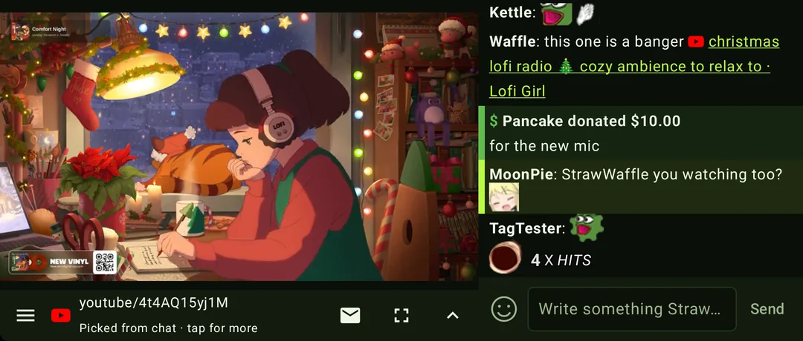
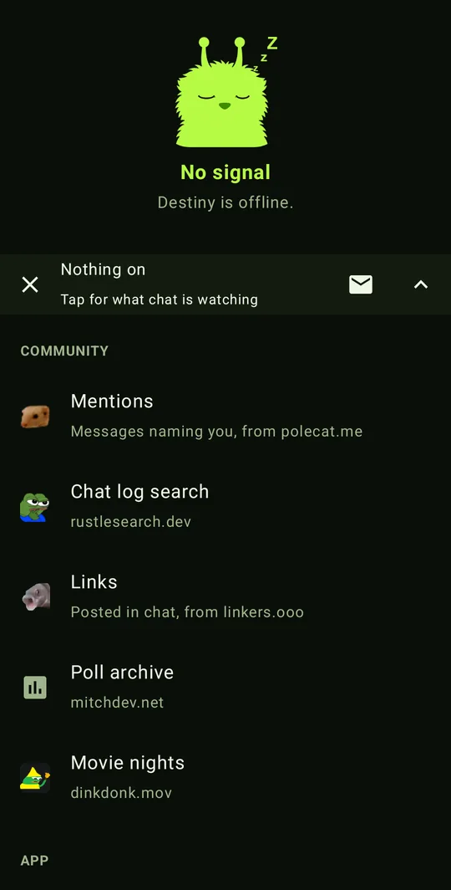
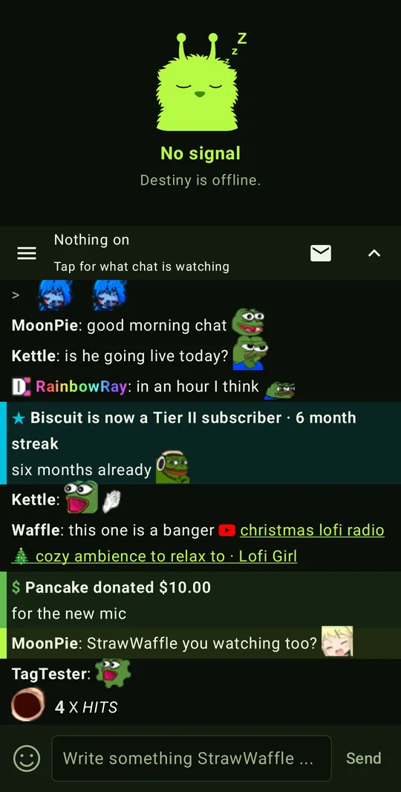
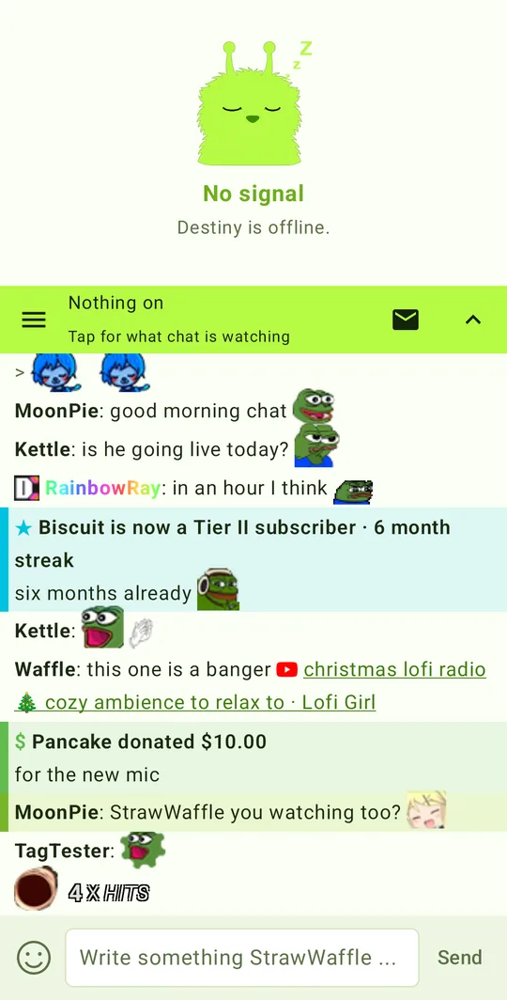
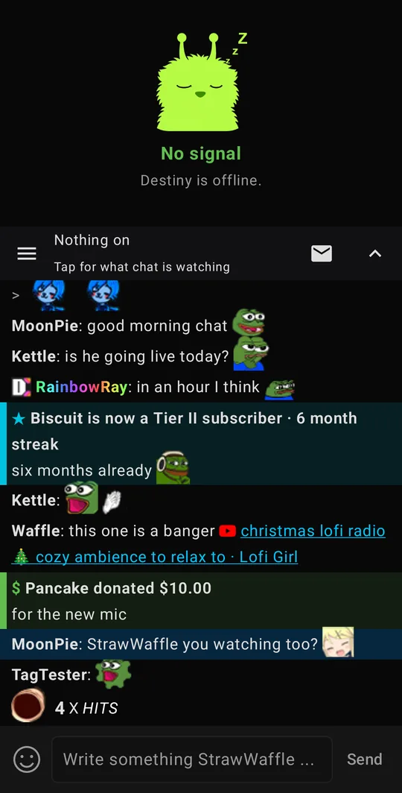
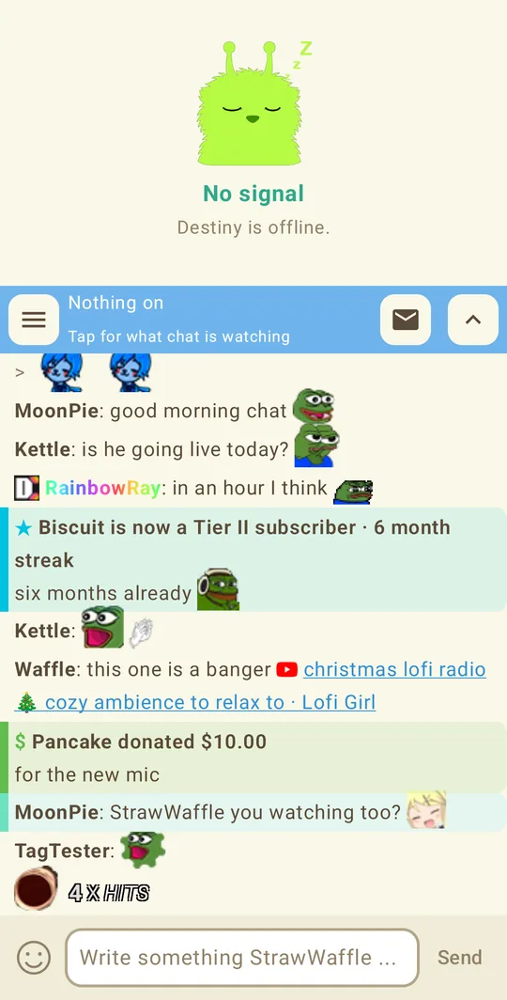
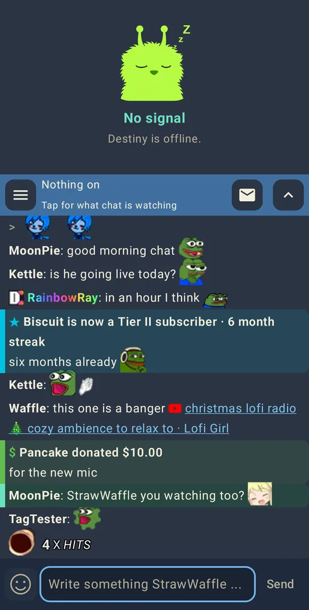

Glorp
Already in destiny.gg chat on your phone? Glorp is the same chat as an Android app, plus what a browser tab can't do: streams in a proper video player that keeps going when you leave, a notification when someone mentions you, a warning before a message gets you muted, and the community's tools in one place.
Free, for Android 8 or newer. A community app. Neither destiny.gg nor Destiny makes it.
Streams that keep playing
In a browser, bigscreen plays each stream in that platform's web player, with its limits. Glorp gets the stream itself and plays it in Android's own video player.
- Sharper Kick. Kick's web player is held to 360p. Glorp plays the same stream at up to 1080p60, about 4 seconds behind live.
- Leave the app and it keeps going, where a browser tab pauses. The video shrinks to a small window with chat still connected, or plays just the sound with the screen off.
- A quality menu, starting at your screen's size so you never download more than you can see.
- Kick, Twitch, YouTube, Rumble and AngelThump, with the web player as a fallback for anything else.


Previews, cards and tags
The site shows a lot when a mouse hovers over something, and a phone has no hover. In Glorp you tap instead, and there's more to find.
- Tap a link for its preview without leaving chat: a video's title and thumbnail, an X post's text and picture, or the image itself. YouTube links play right there.
- Hold a name for their card: mention or whisper them, their membership card with team, tier and standing, and their recent messages.
- Tag people your way. Chat's own tags, a colour and a note that follow your account, set from the card. And an emoji next to their name that only you see.
- Tap an emote to see who made it, favourite it, or add it to your message.
- Tap a name to focus on that person, as on the site, and your latest mention stays at the top until you close it.


The community's tools, built in
No more opening other sites in other tabs. These are in Glorp's menu, and their links in chat open there too.
- Mentions: every message naming you, or anyone, since December 2025, from polecat.me.
- Chat log search: by name, words or both, and the chat around any line, from rustlesearch.dev.
- Links: the pictures and links posted in chat, newest or most reacted to, from Pizza's linkers.ooo.
- Poll archive and movie nights, from Mitch's mitchdev.net and dinkdonk.mov.
- Nuke and mutelinks warnings, from vyneer's lists: Glorp warns you before you send a message that would get you muted, and a triangle at the top of chat says while one is on. Add your own alert words too.

Five themes
Glorp's green in dark and light, destiny.gg's own colours, and Aerith's light and dark, with her round buttons and glowing input. The userscript brings the same themes to the site on a computer.





Know when it matters
- A notification when Destiny goes live, when someone mentions you, and when a whisper comes in, with Glorp closed.
- Mentions work with any sign-in, because they come from polecat.me's chat logs. Check as often as every 5 minutes, or less to save battery.
Lighter than a browser tab
A tab runs the whole website. Glorp only does what chat needs: the connection closes when you leave, only the lines on screen get drawn, new messages are prepared away from the screen so busy chat doesn't stutter, and the screen stays awake only while video plays.
Measured against the site in Chrome
One phone, an XREAL Beam Pro on Android 14, running on battery. Chrome and Glorp took turns every 12 to 35 minutes for an afternoon, so changes in how busy chat was hit both alike. Same brightness, sound at zero, screen always on, the same YouTube live stream for video. Chat ran at 10 to 70 messages a minute.
| Processor time | Chrome | Glorp |
|---|---|---|
| Chat | 1.25 cores | 0.62 cores |
| Chat and a stream | 1.49 cores | 0.92 cores |
| Chat, animations off in both | 1.06 cores | 0.60 cores |
Glorp does the same work with about half the processor time. The battery barely noticed on this phone: with chat alone Glorp lasted 10 to 20% longer, and with a stream both drained the same. Its screen, on with nothing running at all, drained almost as fast as either app, so the processor is a small part of the total there. Phones whose processors take a bigger share, and busier chat, are where the difference shows.
Your chat, as it is
Glorp is built on destiny.gg's own chat code, so nothing you rely on goes missing: emotes and combos as the site draws them, whispers, polls, the pinned message, tags and highlights, the site's commands, and hiding NSFW and NSFL. Signed in, your chat settings follow your account, and the site sees what you're watching.
Make it yours
- Dim or hide chat from people watching other streams.
- Text size, and your phone's font or the site's.
- Your pick of platform when Destiny is live on several.
- Settings → Sync keeps it all the same on your other phones, stored encrypted.
Install
On your phone, download the APK from the latest release and open it. Android asks once to let your browser install apps.
Or add
https://github.com/StrawWaffle/glorpto Obtainium.After that, Glorp offers new versions at the top of its menu.
Signing in
In Glorp, open the menu and choose Sign in. destiny.gg's own login page opens inside the app, with every login it offers: Twitch, Google, Kick, Reddit, Discord and X.
Passkeys don't work inside apps, so use your password or an authenticator code.
Glorp never stores your password. It keeps the session destiny.gg gives it after you log in, on your phone only, encrypted with a key that only Glorp can use and that can't be copied off the phone. It sends the session to destiny.gg and nowhere else, and signing out in Glorp deletes it.
On a computer, if you want it
Glorp is a phone app, and the app is where to start. If you also use destiny.gg's chat in a browser, the Glorp userscript brings a few of Glorp's own things there: the themes, name icons, hiding other streams' chat, your latest mention kept in view, polecat.me's mentions, rustlesearch.dev's log search, and your icon and chat's tag in each name's menu. Settings → Sync keeps them the same as in the app.
It does much less than the app, and it needs a userscript manager in your browser: Tampermonkey or Violentmonkey.
Problems and ideas
In Glorp, Menu → Report a problem writes a GitHub issue with the details filled in. No GitHub account? Whisper StrawWaffle in destiny.gg chat. Ideas are welcome the same way, or as an idea on GitHub.